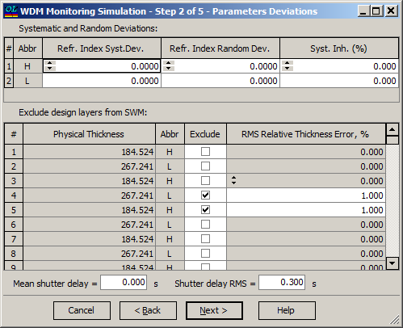

WDM Monitoring Simulation - Parameters Deviations
WDM Monitoring Simulation - Parameters Deviations
Navigation: OptiLayer Menu Commands > Analysis Menu > WDM Monitoring Simulation >
WDM Monitoring Simulation - Parameters Deviations
` <wdm_error_analysis_st1.html>`__ ` <wdmerroranalysis.html>`__ ` <wdm_error_analysis___signal_er.html>`__

At the second step of the WDM Monitoring Simulation dialog, it is possible to specify deviations of the main parameters.
At the top of the dialog, Systematic and Random deviations of the refractive index for both materials can be specified. Default values for these deviations are zero.
In the middle part of the dialog, it is possible to exclude some filter layers from the SWM (Single-Wavelength Monitoring) procedure. In many cases, so-called coupling layers are problematic for SWM due to the low level of transmittance intensity in these layers, and it may be desirable to monitor such layers by other means, for example by time or with the help of quartz crystal monitoring. The RMS Relative Thickness Error column allows to specify the level of errors of these supplementary types of monitoring.
In the bottom part of this dialog, it is possible to specify mechanical instabilities during the monitoring process, like Mean shutter delay and Shutter delay RMS.
See also: